01 / IMMUNITY ACCESS
预防早有答案
宫颈癌明明有疫苗可防，为何每年仍有数十万女性抱憾离世？
在所有恶性肿瘤里，宫颈癌几乎是唯一的例外。
宫颈癌病因清晰，疫苗可防，
筛查可控，却仍是全球女性第四大常见癌症。
根据2026年7月公布的最新数据，2024年约60.4万例新发病例中，
超过87.3%发生在中低收入国家，近90%的死亡也由这些地区承担；
中国与印度合计贡献了全球近38%的疾病负担。

鼠标悬停查看详细占比
从世界目标、中国政策、治疗成本到校园传播，宫颈癌防治真正缺失的，不再只是一针疫苗。
宫颈癌明明有疫苗可防，为何每年仍有数十万女性抱憾离世？
在所有恶性肿瘤里，宫颈癌几乎是唯一的例外。
宫颈癌病因清晰，疫苗可防，
筛查可控，却仍是全球女性第四大常见癌症。
根据2026年7月公布的最新数据，2024年约60.4万例新发病例中，
超过87.3%发生在中低收入国家，近90%的死亡也由这些地区承担；
中国与印度合计贡献了全球近38%的疾病负担。
鼠标悬停查看详细占比
持续性高危感染通向癌变，漫长潜伏期既是窗口也是盲区
这种严重的疾病负担，指向同一个明确的病因——HPV病毒。
它并非单一类型的病毒，而是庞大的型别家族。
宫颈癌99.7%由皮肤高危型HPV（尤以16、18型为主）导致，
HPV疫苗防护的核心目标就是覆盖高危型病毒。
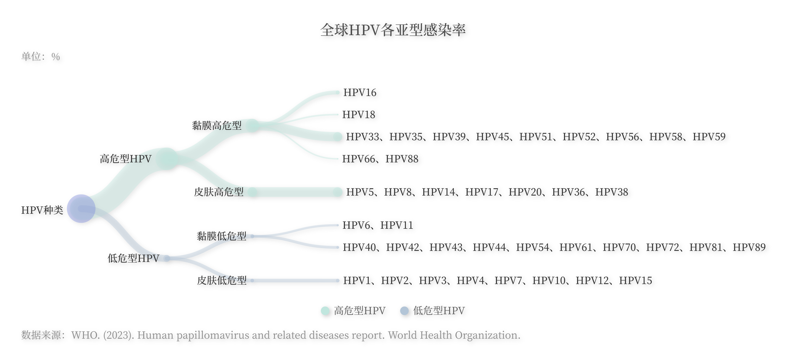
鼠标悬停查看详细占比
同时，它们也是肛门癌、外阴癌、口腔癌等多种癌症的重要病因。
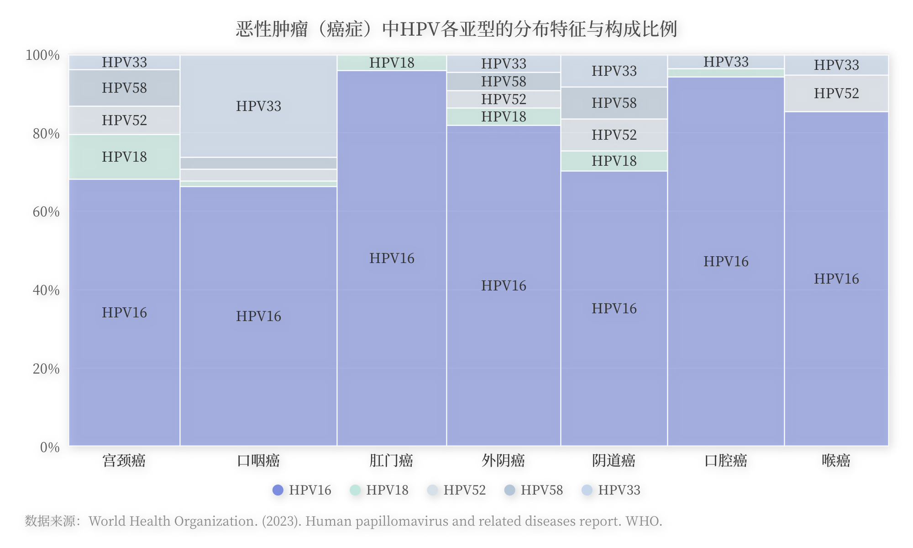
鼠标悬停查看详细占比
多数HPV感染会在一两年内被免疫系统自然清除，
唯有持续性感染才会沿着病变一路发展为宫颈癌。
这一过程往往长达十年以上。
该图为ChatGPT-Image2绘制
漫长的潜伏期，
正是疫苗与筛查发挥作用的窗口。
但这漫长的“无声”正是最致命的伪装。
病毒在人们毫无察觉的接触中悄然接力，
织就了一张隐秘的感染暗网。
中国新发病例中，18-24岁女性HPV检出率竟达18.8%
60.4万新发病例中，
中国以14.49万例的庞大数字占全球病例约23.98%的占比，
标准化年发病率在20年间从9.21/10万持续攀升至13.0/10万，年均增速超1.74%。
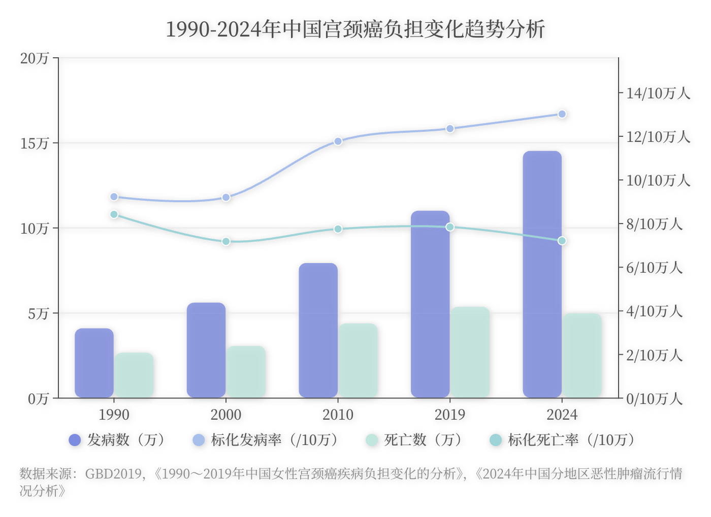
鼠标悬停查看详细占比
更值得警惕的是，
宫颈癌正加速逼近39岁以下的年轻女性。
拉开中国的感染数据曲线，
你会看到两个危险的高地。
其中最陡峭的一座直指18至24岁——
病毒最先盯上的，
正是刚刚迈入大学校园的年轻女孩。
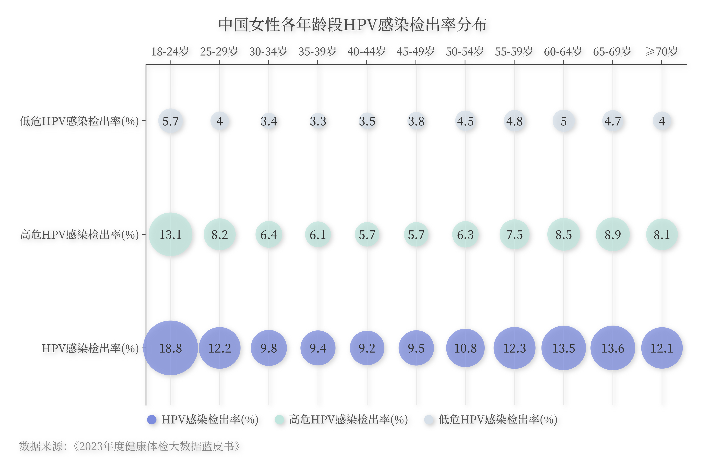
鼠标悬停查看详细占比
2017—2022年，全国自费阶段首剂接种率最高约25%，西部多地仅2%—4%
2017至2022年，免疫的屏障主要依赖个人自费。
全国绝大多数省份的接种率仍在个位数徘徊；
在广大的西部地区，打完三针的女孩甚至不足1%。
地图上的差异并不只是健康认知的差异，
也对应着疫苗供给、支付能力与接种服务可达性的差距。
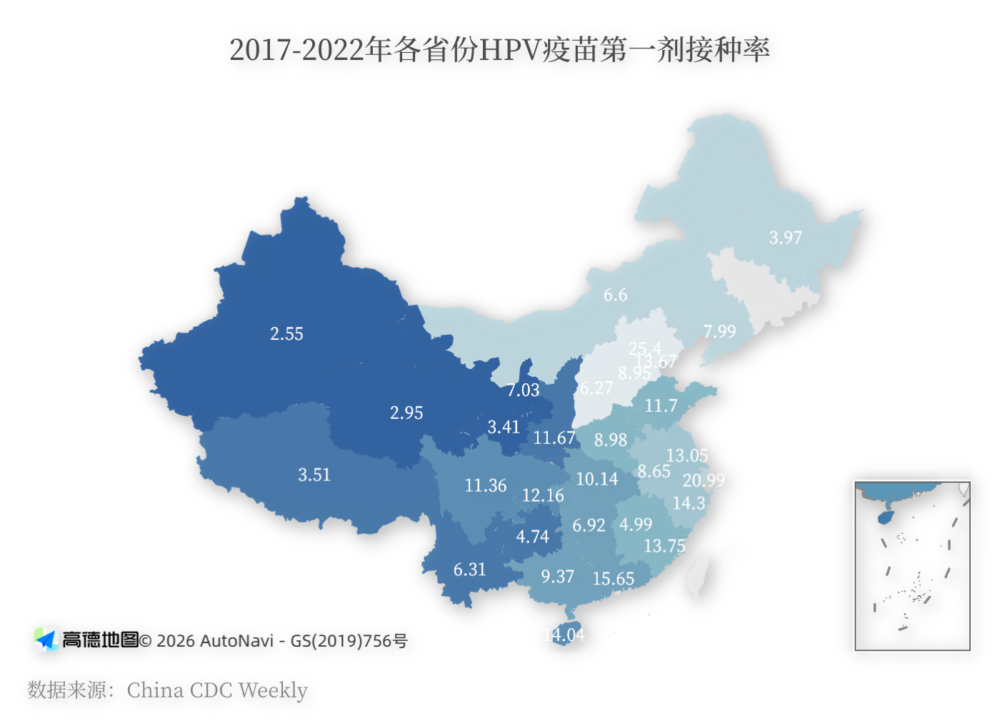
鼠标悬停查看详细占比
鼠标悬停查看详细占比
二价疫苗由329元降至27.5元，38亿元可覆盖2025—2030年规划
曾经，进口九价全程接种成本将近4000元，
同时，高居不下的四价疫苗费用，
也一起为HPV免疫筑起了一道高昂费用的障碍。
但这个障碍，正随着国产疫苗的诞生悄然消融。
单支国产二价疫苗从上市初期的329元降至27.5元的历史底价，
首款国产九价也以499元终结了千元的垄断。
按照这一价格，首批4.25亿元的财政预算，
足以为近772万适龄女孩接种疫苗。
长远来看，仅需约38亿元，
就足以铺开5年内全国适龄女孩的免疫蓝图。
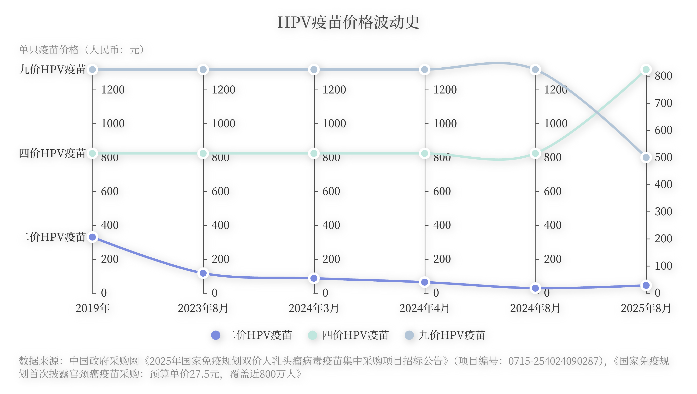
鼠标悬停查看详细占比
WHO提出90-70-90目标，中国18个省级行政区试点后，全国13岁女孩免费接种
面对日益严峻的疾病负担，WHO在2020年提出消除宫颈癌“90-70-90”目标：
90%的女孩15岁前完成接种，70%的女性接受高效筛查，90%的患者获得治疗。
.png)

为了响应号召攻克疾病负担，中国从地方试点起步，
在五年间实现18个省级行政区接力推进；
海南2024年目标人群覆盖率超90%，济南达91.5%，江苏首针达80.5%。
2025年11月，七部门发文，
全国年满13周岁女孩
免费接种HPV疫苗计划正式启动。
女大学生仍多靠自费接种，而宫颈癌治疗费用可达数万至十余万元
免费政策主要覆盖13岁女孩，
但正处于感染高峰的18—24岁女大学生们仍要
独自面对自费接种、预约排队与信息不透明。
而一旦在预防的最前端失守，随之而来的将是沉重的代价：
早期宫颈癌的手术自付金额约在2万—3.8万元；
若不幸步入复发转移阶段，
仅免疫药物每年的自费开销便高达8万—15万元。
将这些费用换算成疫苗剂数，一次治疗的花费，
足以为数百名女孩筑起免疫屏障。
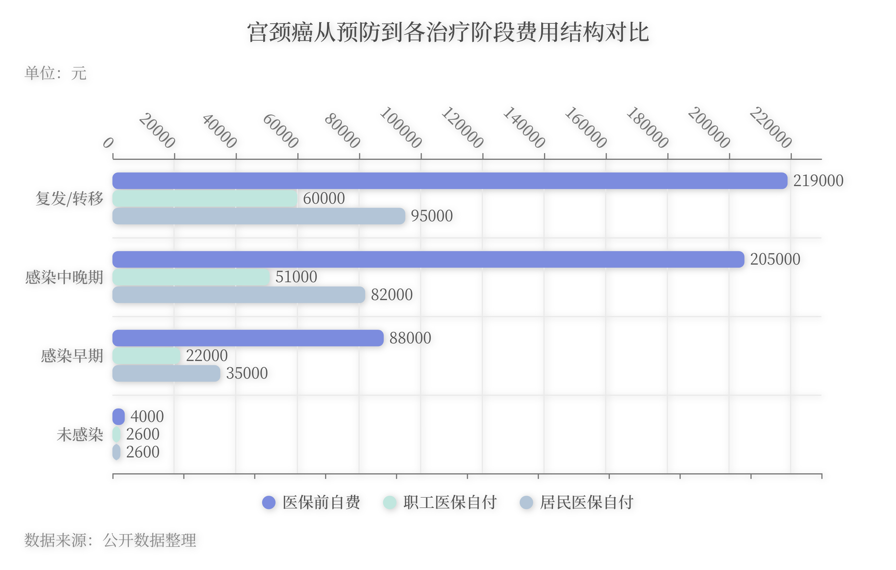
鼠标悬停查看详细占比
政策全面铺开前，主动接种意愿55.5%—83.7%，真实接种率仅19%
数据显示，公众的主动接种意愿最高可达83.7%，
但真实的接种率却仅有19.0%。
如果是接种点分布问题，落差本不该如此巨大。
在地图上检索大学城周边的接种网点，
你会看到一个个代表着“可及性”的坐标。
从物理空间来看，接种中心似乎并不稀缺。
但这些看似近在咫尺的坐标，未能转化为真实的保护伞。
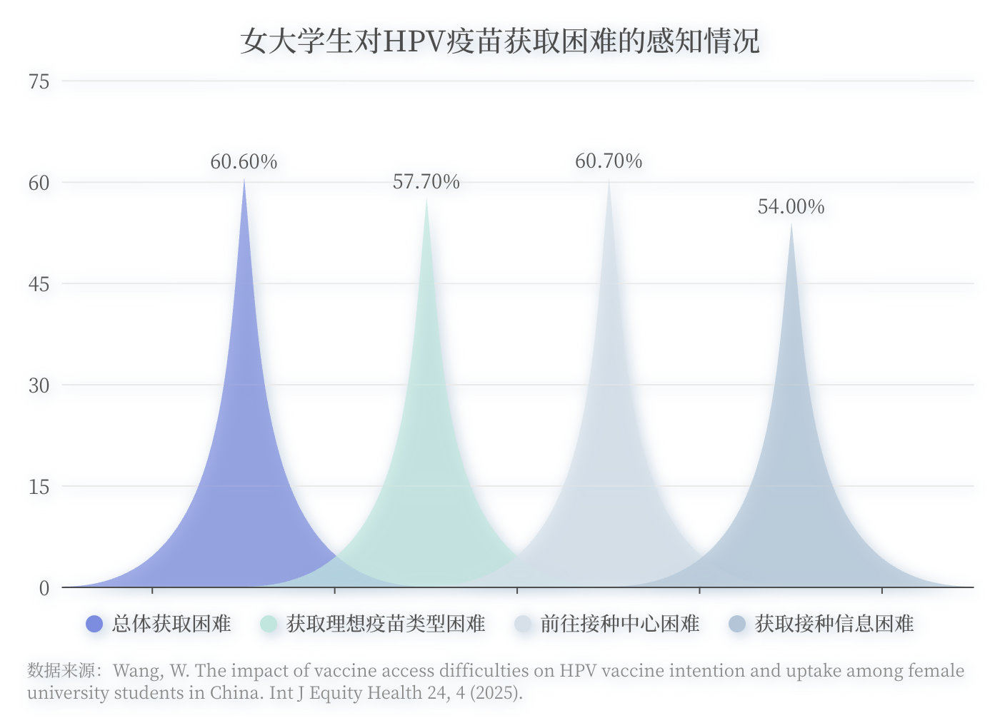
鼠标悬停查看详细占比
这本质上是因为，
HPV疫苗的可及性障碍并不只表现为
价格和供应不足，
也包括信息的不透明与难获取。
一项研究中，超六成的女大学生表示
“获取接种信息困难”。
她们的接种之路
从一开始就卡在了起步阶段，
信息的壁垒正在
无声地消磨着她们的接种信念。
风险、副作用与经验碎片挤满她的搜索结果，预约信息仅占8.5%
当一个女孩在社交平台搜索HPV疫苗时，
清晰的指导路径通常是缺席的。
等待她的，
是风险提醒、副作用讨论、
价格比较、政策转述与个人经历
交织在一起的喧嚣。
1500条微博中，
疾病科普与感染风险占34.47%，
价格与惠民政策占19.14%，
真正指向预约接种的内容仅8.5%。
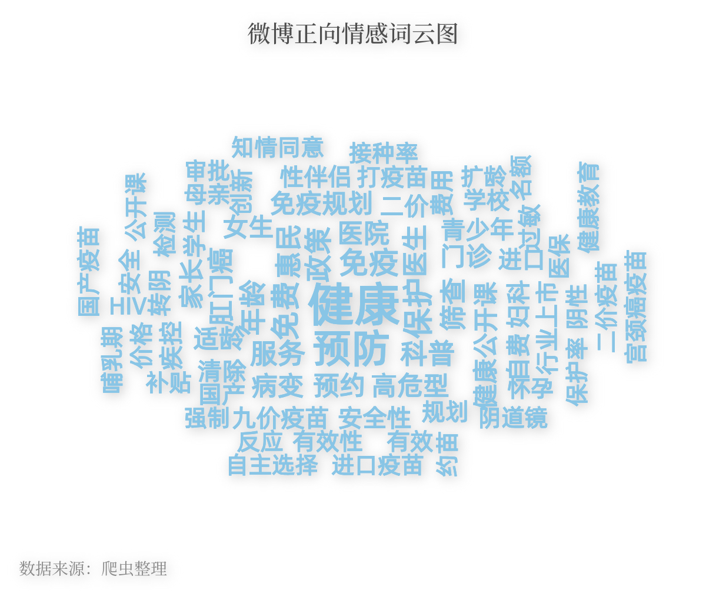
鼠标悬停查看详细占比
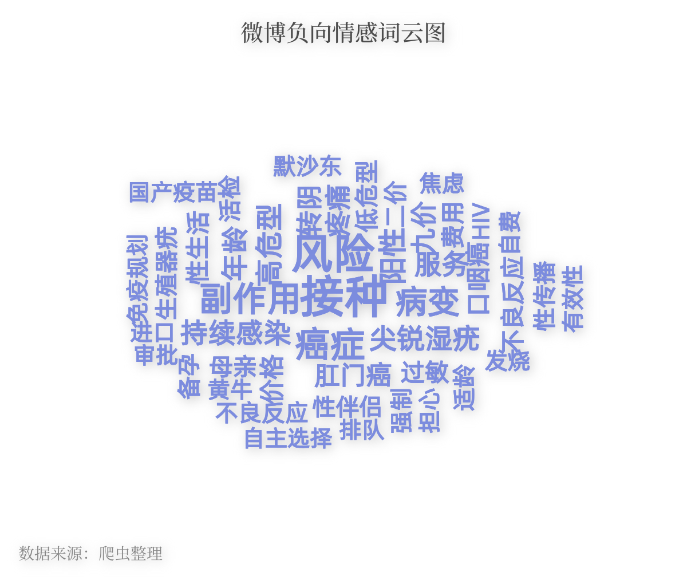
鼠标悬停查看详细占比
信息的洪流并未带来确切的答案。
在理性的医学科普与感性的副作用恐慌之间，
女孩们陷入了漫长的心理拉扯。
这种严重的信息过载不仅未能提供指引，
反而扭曲了对疫苗的真实认知，
让原本就脆弱的接种信念，在犹豫与恐惧中被不断消耗。
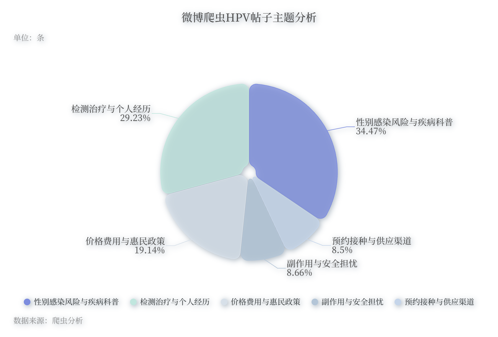
鼠标悬停查看详细占比
官方渠道最受信任，学校却成为实际触达与受众期待落差最大的一环
在这片庞杂的信息场中，
谁在发声，直接左右着女孩们的判断。
我们对全国在校女大学生的问卷清晰地映照出了
不同渠道的真实影响力：
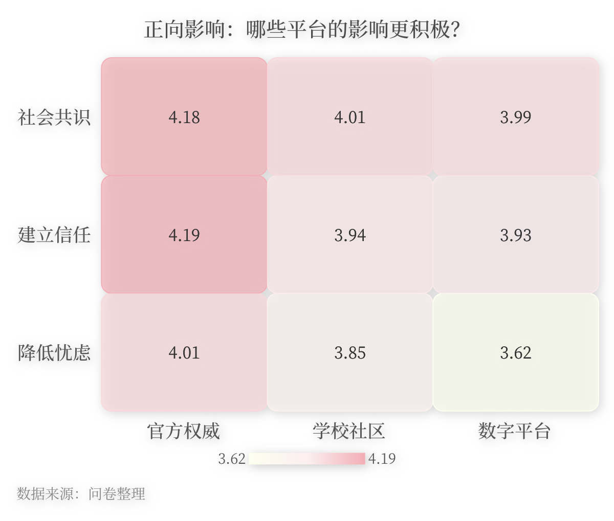
鼠标悬停查看详细占比
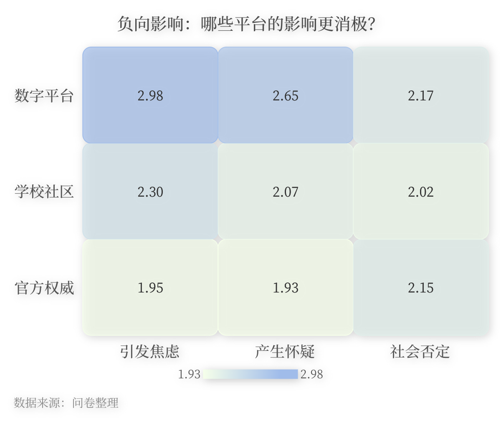
鼠标悬停查看详细占比
官方与权威渠道依然是最坚实的信任基石，
足以平息恐慌、稳定情绪；
而数字平台上那些零碎交织的声音，
却往往在无形中放大了焦虑与迟疑。
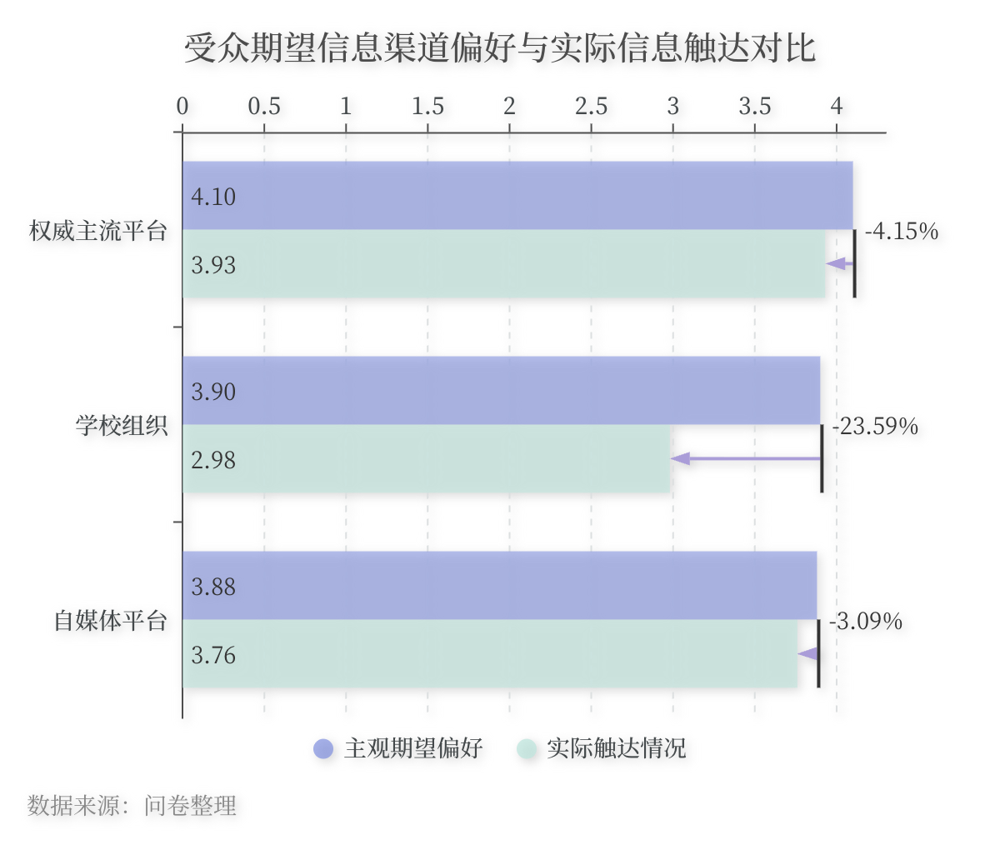
鼠标悬停查看详细占比
令人叹息的是，学校组织的实际帮助
却远远低于女大学生们的期待，
留下了最严重的断层。
这是当前高校健康教育的缺失的部分。
目前的高校公共卫生宣传
仍多聚焦于艾滋病等传统传染病，
HPV常识不仅未能成体系地走进课堂，
就连校医院的日常宣传栏、
面向全校的健康宣讲会里，
相关的接种指引也往往处于边缘位置。
这提醒我们，
高校的健康教育改革，迫在眉睫。
85.3%的受访者偏好真实经历，数据说明的排斥比例最高
有了可靠的讲述者，
还需要合适的讲述方式。
单纯罗列文献往往不够，
它需要更直观的图表，或是更容易消化的外壳。
信息的形式，本身就是信息的内容。
在所有的科普形式中，
带有温度的“真实经历”排在首位。
85.3%的人给出了积极评价，
近一半直接打了满分，
“医学科普”也获得了75.5%的认可。
“数据说明”不仅垫底，
还遭到了15%受访者的明确排斥，
大家对它的看法也最为分化。
为什么？
这是因为个人故事天然带着共鸣与信任。
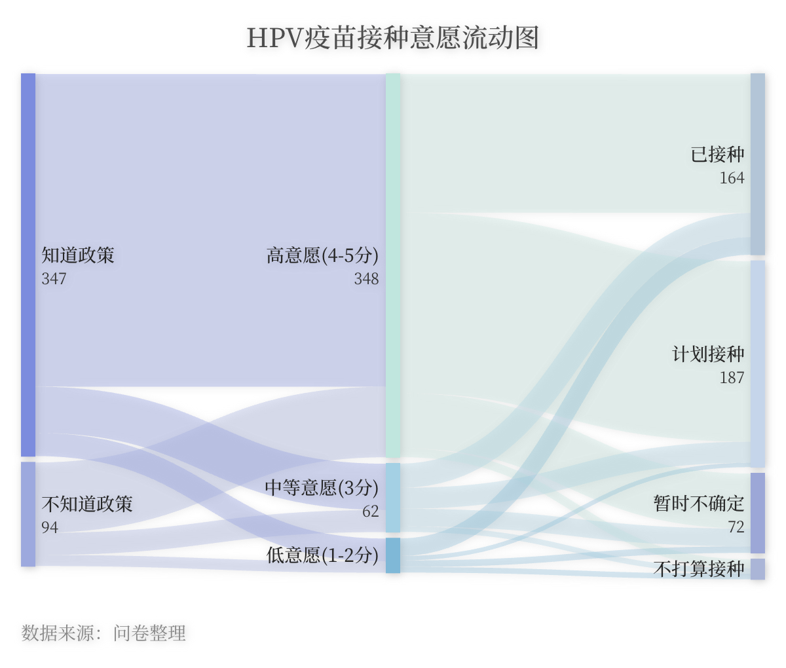
所以，面向女大学生群体时，
信息呈现的顺序或许需要调整：
不妨先由同龄人分享自己的亲身经历，
再用医学解释和数据补充说明。
更有研究经过实验证明，当晦涩的文字说明，
变成结合了他人视角的直观图表时，
女大学生对HPV疫苗的认知水平会有最明显的改善。
故事先行 才能让数据被听见
政策是否知晓影响接种意愿，主流媒体与官方卫生机构必须主动出击
认知直接决定了行动。
根据调查结果，清楚免费与补贴政策的女孩，
普遍有着极高的接种意愿，且大多已付诸行动或列入计划；
而对政策不知情的人，绝大多数陷入了长久的观望与停滞。
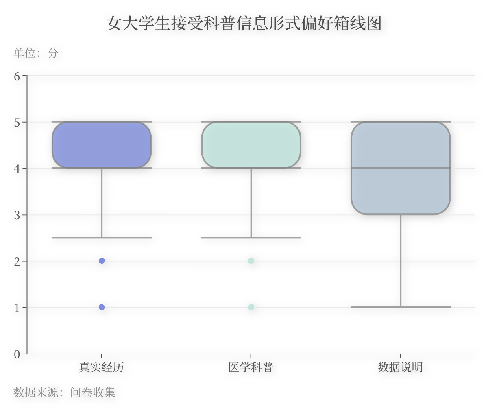
鼠标悬停查看详细占比
官方通告的发布仅仅是个起点。
当具体的补贴门槛、预约链接和风险应对指南，
真实地出现在女孩们
日常使用的搜索框与信息流里时，
政策才算真正走到了女孩们的面前。
也正因如此，
在喧杂的网络环境中，
权威的官方声音不能缺位。
公共卫生议题的传播话语权
不能让位于碎片化的
个人经验、商业广告、谣言传言。
将权威资讯转化为易读的图表与案例，
让高公信力的声音融进日常屏幕，
公共卫生科普才不会被营销流量带偏。
权威发声 才能把政策从文件推向信息流
高校官方渠道应持续发布HPV政策、预约路径与风险答疑
校园作为与学生最息息相关的生活场所，应该构建起
“接种HPV疫苗是符合健康主流、被同龄群体推崇”
的包容性同辈文化。
校医院可以提供预约流程和专业答疑，
辅导员、学生会与社团可以组织真实经历分享，
把政策知晓、同辈叙事和接种路径连接起来。
用身边的故事替代枯燥的数据说教，用同辈的共识去瓦解个体的迟疑。
中国正在用惊人的行政效率填补公共卫生的洼地。
在政策、资本与数据透明公开的今天，
如何填平基层认知的鸿沟、打破地域信息的阻隔，
并推动疫苗与早期筛查双轨体系在更广阔的中国腹地落地生根，
将是我们这一代人最终彻底消除宫颈癌必须要跨越的最后一座山峰。
数据来源：
【1】GLOBOCAN 2024. https://gco.iarc.who.int/en
【2】WHO. (2023). Human papillomavirus and related diseases report. World Health Organization. https://www.hpvcentre.net/
【3】GBD 2019. https://vizhub.healthdata.org/gbd-results/
【4】《2023年度健康体检大数据蓝皮书》。 https://www.sgpjbg.com/bgdown/174167.html
【5】China CDC Weekly 2024. https://weekly.chinacdc.cn/en/article/doi/10.46234/ccdcw2024.040
【6】中央国家机关政府采购中心. 《2025年国家免疫规划疫苗集中采购项目-双价人乳头瘤病毒疫苗采购项目框架协议征集公告》. (2025-12-11). https://www.ccgp.gov.cn/cggg/zygg/gkzb/202512/t20251211_25910415.htm
【7】界面新闻. 《国家免疫规划首次披露宫颈癌疫苗采购：预算单价27.5元，覆盖近800万人》. 证券时报网转载. (2025-10-29). https://www.stcn.com/article/detail/3439740.html
【8】美国食品药品监督管理局(FDA). 《FDA Approves New Indication for Gardasil for Prevention of Vulvar and Vaginal Cancers》. (2006-06-08) https://www.fda.gov/news-events/press-announcements/fda-approves-new-indication-gardasil-prevention-vulvar-and-vaginal-cancers
【9】世界卫生组织(WHO). 《Weekly Epidemiological Record, No. 15, 2009, 84, 117–132》. (2009-04-10) https://www.who.int/publications/i/item/who-wer-8439-117-132
【10】国家药品监督管理局(NMPA). 《葛兰素史克公司的双价人乳头瘤病毒吸附疫苗在中国获批上市》. (2016-07) https://www.nmpa.gov.cn/
【11】国家药品监督管理局(NMPA). 《首个国产重组人乳头瘤病毒疫苗（馨可宁）获批上市》. (2019-12-31) https://www.nmpa.gov.cn/directory/web/nmpa/zhuanti/cxylqx/20191231160701608.html
【12】国家卫生健康委, 教育部, 民政部, 等. 《关于印发加速消除宫颈癌行动计划（2023—2030年）的通知》. (2023-01-05) http://www.nhc.gov.cn/fys/s3581/202301/42c2c95b6db84f9cb356cfdf1edbbac7.shtml
【13】国家疾控局, 国家卫生健康委, 教育部, 等. 《关于将人乳头瘤病毒疫苗纳入国家免疫规划有关工作事宜的通知》. (2025-10-10) https://www.ndcpa.gov.cn/
【14】中国疾病预防控制中心. 《人乳头瘤病毒疫苗纳入国家免疫规划实施技术方案》. (2025-10-30) https://weekly.chinacdc.cn/en/article/doi/10.46234/ccdcw2025.262
【15】CSCO宫颈癌诊疗指南（2025版）.人民卫生出版. https://www.csco.org.cn/
【16】国家医疗保障局. 《国家基本医疗保险、工伤保险和生育保险药品目录（2025年）》. 医保发〔2025〕33号. (2025-12-07). https://www.nhsa.gov.cn/
【17】世界卫生组织(WHO). 《Global Strategy to Accelerate the Elimination of Cervical Cancer as a Public Health Problem》. (2020-11-17) https://www.who.int/initiatives/cervical-cancer-elimination-initiative
【18】GOG240 Trial (NRG Oncology/GOG).《Randomized Phase III Trial of Chemotherapy with or without Bevacizumab for Advanced Cervical Cancer》. N Engl J Med, 2014. https://pmc.ncbi.nlm.nih.gov/articles/PMC4689764 Wang, W. The impact of vaccine access difficulties on HPV vaccine intention and uptake among female university students in China. Int J Equity Health 24, 4 (2025).
【19】中国疾病预防控制中心. https://www.chinacdc.cn/
参考文献：
【1】孟令昊, 胥秋艳, 李科, 等. 1990～2019年中国女性宫颈癌疾病负担变化的分析[J/OL]. 中国循证医学杂志, 2021, 21(10). https://www.cjebm.com/article/10.7507/1672-2531.202101091
【2】孙可欣, 李荔, 王少明, 等. 2024年中国分地区恶性肿瘤流行情况分析[J]. 中华肿瘤杂志, 2026, 48(3): 400-412. DOI: 10.3760/cma.j.cn112152-20260205-00079
【3】Wang, W. The impact of vaccine access difficulties on HPV vaccine intention and uptake among female university students in China. Int J Equity Health 24, 4 (2025).
【4】郭沁.健康行为的社会规范性影响和从众心理[J].浙江大学学报(人文社会科学版),2019,49(1):80-92.
【5】陈旭豪,任汐鹰,江路,等.香港HPV疫苗接种现状以及对我国内地宫颈癌一级预防的借鉴作用[J]. 现代妇产科进展, 2018, 27(1): 64-67+71. DOI:10.13283/j.cnki.xdfckjz.2018.01.016.
【6】周金连,吴晔,韩仪,等.社会化媒体信息接触对个体健康行为的说服效果研究——以HPV疫苗采纳为例[J].新闻大学,2022,(2):1-16+117.DOI:10.20050/j.cnki.xwdx.2022.02.001.
新闻制作：黑龙江大学新闻传播学院 林楠、金思怡、潘欣、曾璇
指导老师：黑龙江大学新闻传播学院 李钟隽、李庚